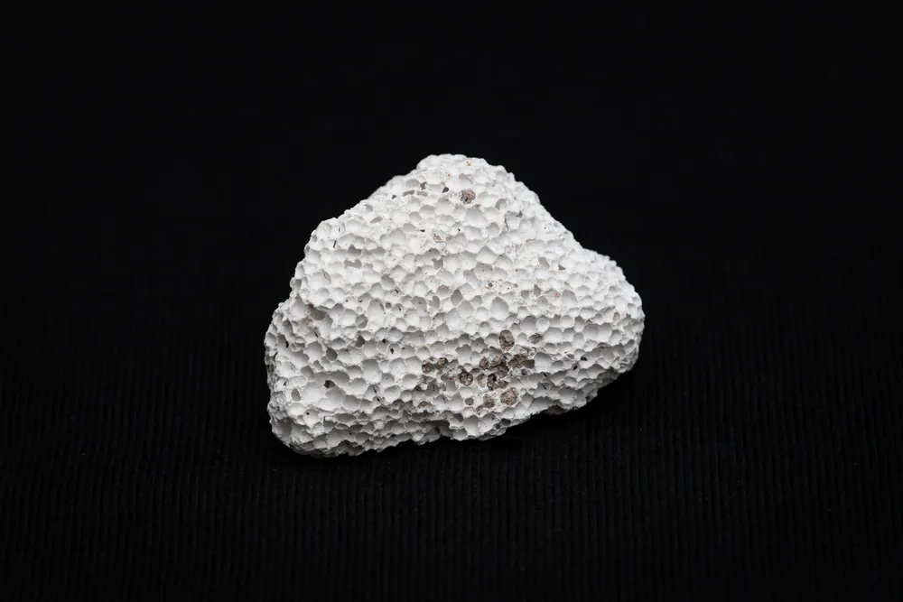
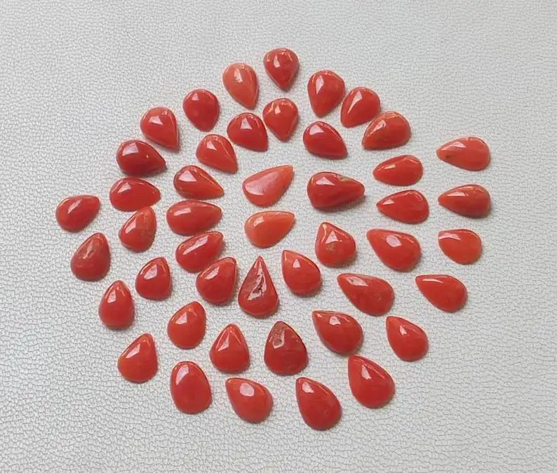

琥珀：千萬年前的樹淚
琥珀是樹木的眼淚凝固千萬年——裡面封存的，是遠古森林的一整個世界。


核心定義
琥珀（amber）是樹脂（resin）經數百萬至數千萬年石化而成的有機寶石：主要成分是碳氫聚合物（含琥珀酸），硬度 2–2.5、比重約 1.05–1.10（比水稍重，鹽水可浮）。它的形成：樹木受傷分泌樹脂→樹脂被掩埋→高壓低氧下聚合成化石。
三大產地：波羅的海（全球最大、黃色系）、緬甸（年代最老、深紅褐）、多明尼加（藍珀，紫外下藍光）。琥珀的魅力在內含物：遠古昆蟲、植物、氣泡——每一件都是獨一無二的「時間膠囊」。
特徵與分類
| 產地 | 顏色 | 特徵 |
|---|---|---|
| 波羅的海 | 黃金、檸檬 | 產量最大 |
| 緬甸 | 深紅褐、酒紅 | 年代最老 |
| 多明尼加 | 藍珀 | 紫外下藍光 |
| 撫順 | 黑褐、血珀 | 中國產 |
琥珀的顏色：金珀（透明金黃）、蜜蠟（不透明乳黃）、血珀（紅褐）、藍珀（多明尼加、紫外藍光）——顏色與透明度決定品級與價格。內含物（inclusions）是琥珀的靈魂：含完整昆蟲者價值倍增。
科學原理
琥珀的鑑定科學：比重 1.05–1.10（鹽水浮）、硬度低（指甲可刮）、摩擦生靜電（吸附紙屑）、熱針測試（琥珀燒焦有松香味、塑膠刺鼻）、紫外燈（琥珀發藍白螢光）。其中「鹽水浮＋熱針味」是兩大快篩。
柯巴脂（copal）是未完全石化的樹脂（僅數萬年）——它不是琥珀（石化不足），遇酒精會溶解。鑑定：滴酒精，柯巴脂變黏，琥珀無反應——一「滴」見真章。
鑑定與鑑別方法
- 鹽水浮測試：琥珀浮、塑膠沉（鹽水比重 1.1）
- 熱針測試：松香味 vs 塑膠味
- 紫外燈：藍白螢光
- 酒精測試：柯巴脂變黏
- 顯微鏡看內含物與氣泡（圓形氣泡＝天然樹脂）
市場行情與保養建議
行情上，琥珀按「顏色透明度＋內含物＋雕工」定價：金珀蜜蠟是華人市場主力、血珀稀有、藍珀（多明尼加）價格高企、內含昆蟲的「蟲珀」價值倍增。近年「老蜜蠟」（年代與包漿）在華人圈行情看漲。
提醒：塑膠仿琥珀（聚苯乙烯等）是市場最大坑——塑膠比重高（沉鹽水）、熱針刺鼻；柯巴脂冒充琥珀則「酒精一滴見真章」。高價琥珀務必權威證書。
常見誤區
塑膠摩擦也生靜電——「生電」是樹脂類材料的通性，不是琥珀專利。要結合比重與熱針測試。
柯巴脂只石化數萬年、未完全聚合物化——它是琥珀的「半成品」。兩者的價差可達數十倍，酒精一測便知。
冷知識
「electricity（電）」一詞就源於希臘語的「琥珀」（elektron）——古人摩擦琥珀發現靜電，電的名字由此而來。
科學家確實從琥珀中的昆蟲體內嘗試提取遠古 DNA——琥珀是古生物的「冷凍庫」，科幻有真實的科學基礎。
反直覺觀點
年代老≠品質好——顏色、透明度、內含物才是價格主軸。血珀、藍珀的行情，看的不是「老」。
琥珀比重僅 1.05–1.10，是寶石界的「輕量級」——鹽水能浮的才是真琥珀，沉下去的（塑膠、玻璃）反而是假貨。